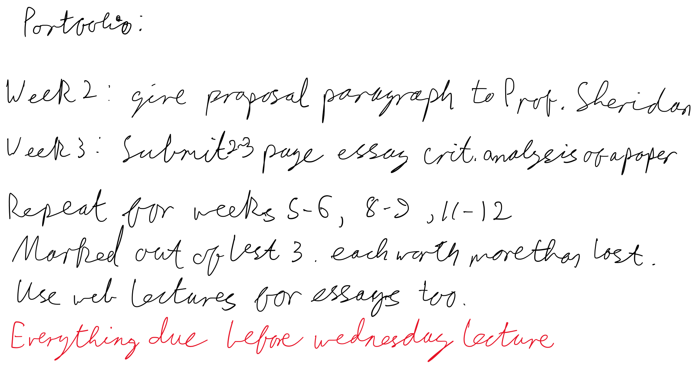
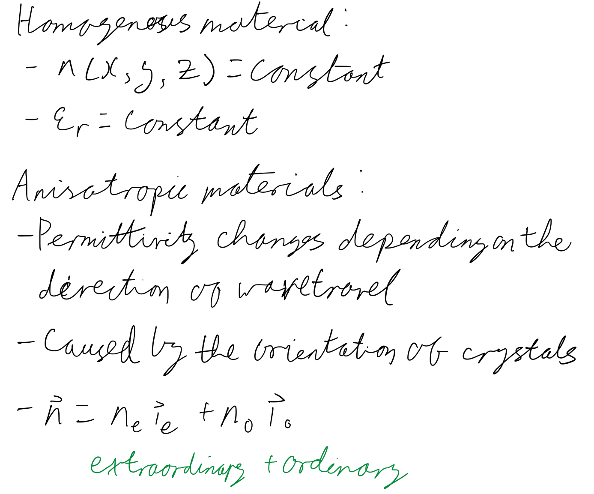
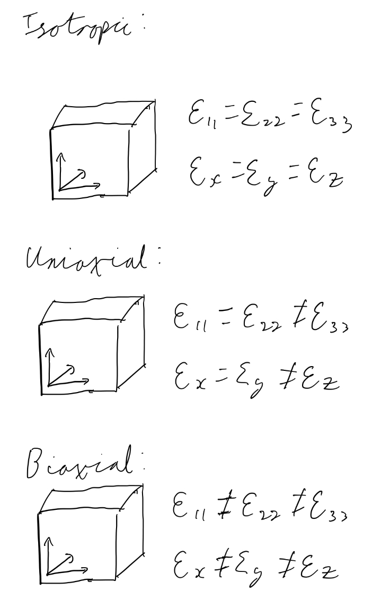
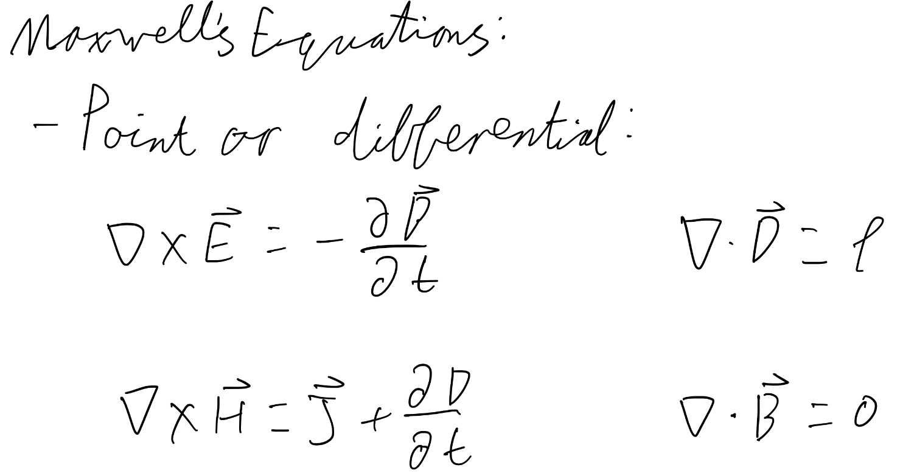
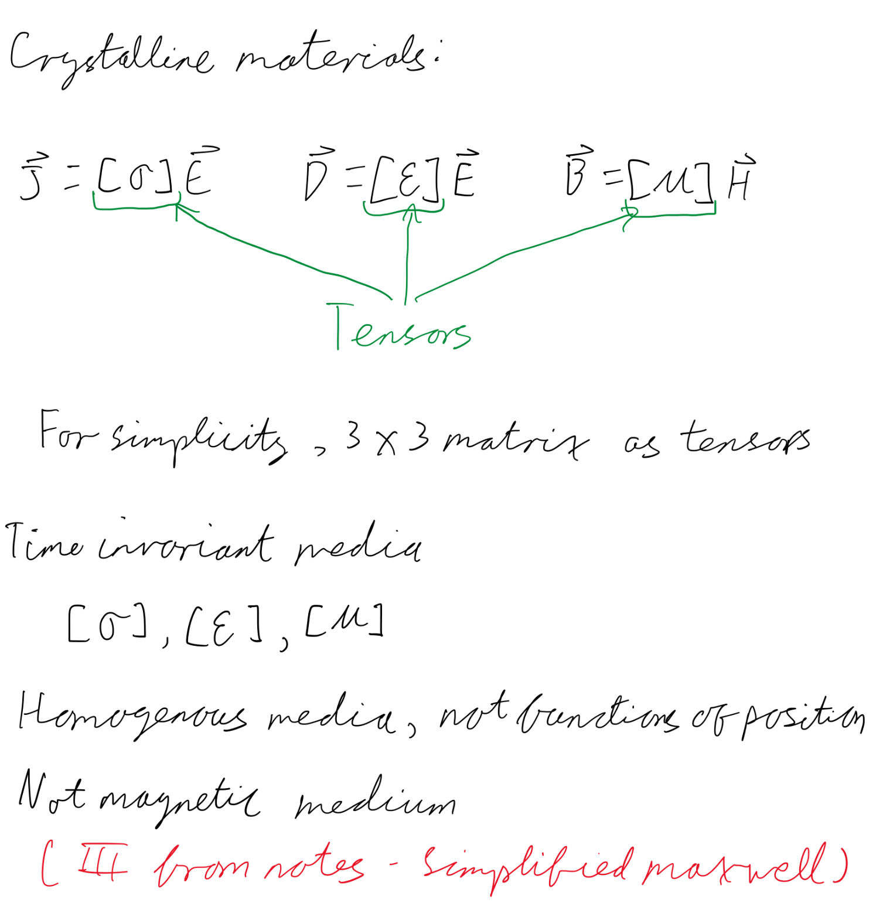

Each essay section contains the essay which was written
by me and submitted, as well as the slides for the
presentation based on the essay and the source article.
Some essays also have intermediate documents I produced,
which may help to show my process in writing these essays.
This section contains notes made during or after lectures based
on material from the lecture notes. They are not designed to be
exhaustive, only what I happened to take note of.





This sections compiles various pieces of information relating to
optoelectronics, based on various "look up" hints from the notes,
or just things I was curious to learn more about.
C-Mount Components are optical components which use a standardised
mounting system, called a C mount. The standard describes the threads
used to mountthe component, which has a 1 inch diameter thread, with 32
threads per inch. This thread is designated as "1-32 UN 2A" in the
ANSI B1.1 standard for unified screw threads. C-Mount Components are
particularly common in off-the-shelf parts, designed to work straight
out of the box. They are also common in the world of camera lenses.
Tensors can be concepctualised as a generalisation of matrices.
They often allow for higher numbers of dimensions than matrices
typically are used for. In the context of this module, tensors
occur as descriptions of permeability, permittvity, and charge
density. Typically these are taken to be 3x3 matrices for simplicity.
Circular polarization is a polarization state in which the
electromagnetic field of the wave has a contant magnitude at
each point and is rotating at a constant rate in the plane
perpendicular to the direction of travel of the wave.
Chiral materials are those which produce or have mirror images
which cannot be superimposed on the original. Similar to the
way that human hands cannot be superimposed as the thumb will
always be different to the pinky.
Steve Mould on YouTube has created some videos about this idea:
Chemistry example
Optical example
Metamaterials are materials which are engineered to have properties
that are not found to occur naturally in nature. This is often
achieved by manufacturing them with very precise control of
the structure of the materials, which is possible to do with
the use of foundries originally made for creating silicon
electronic chips among other techniques.
Icelandic Spar is a type of calcite originally found in Iceland.
It is notable for it's very high birefringence.
A piezoelectric material is one which